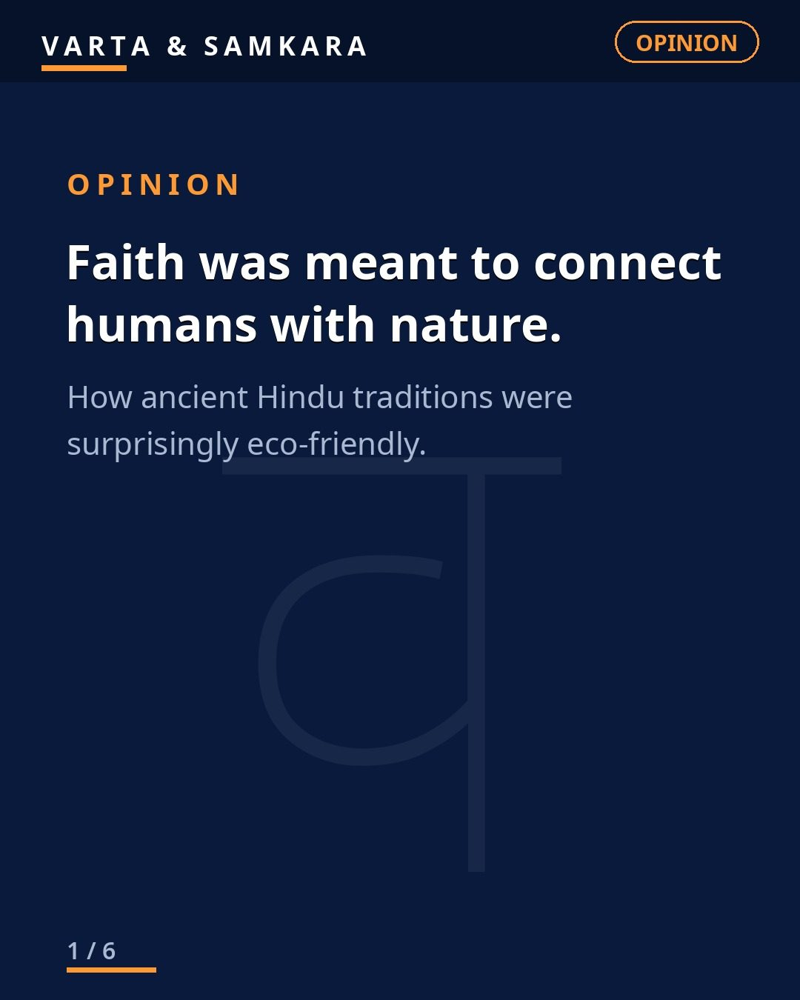
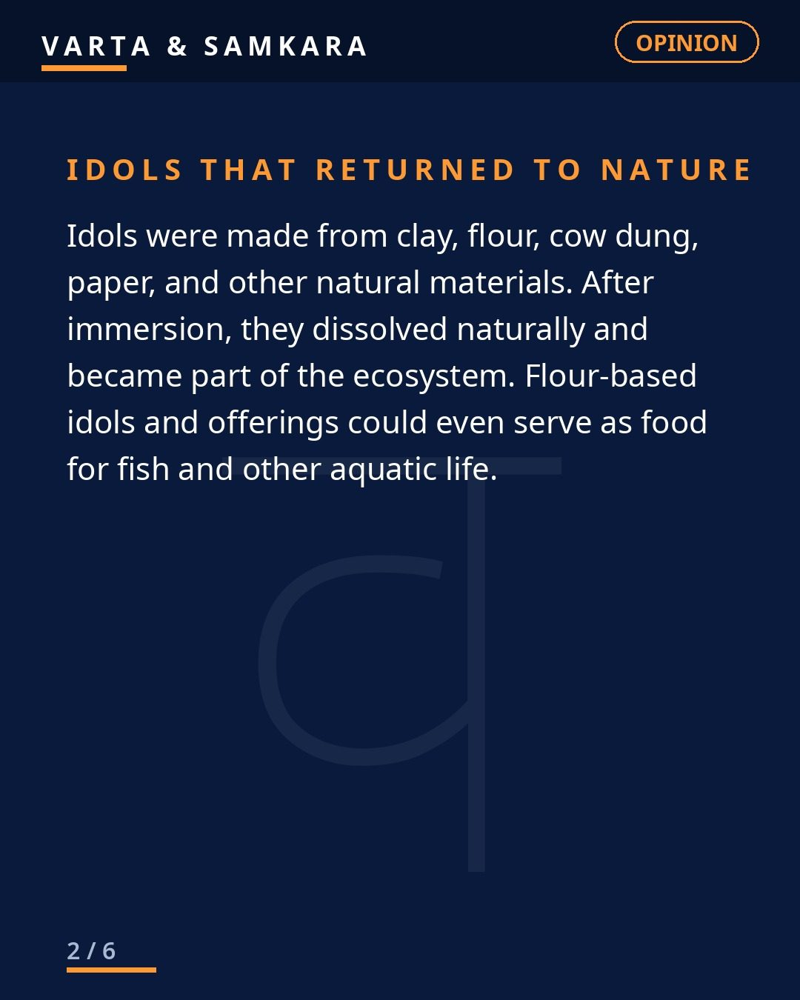
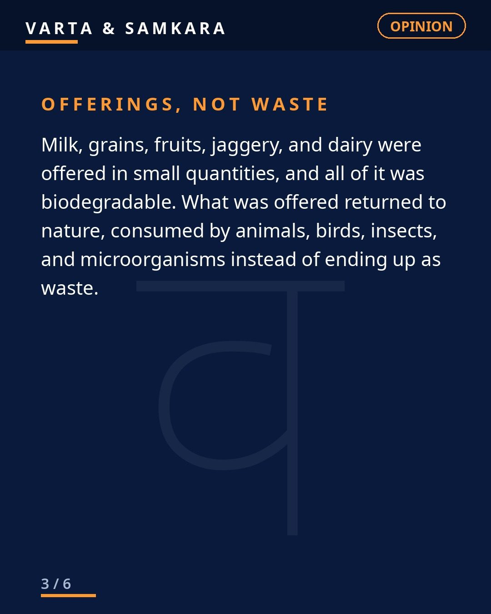
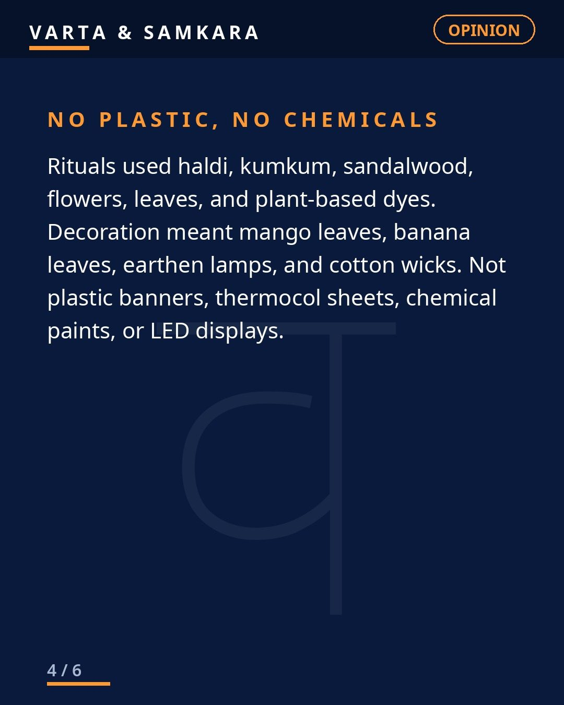
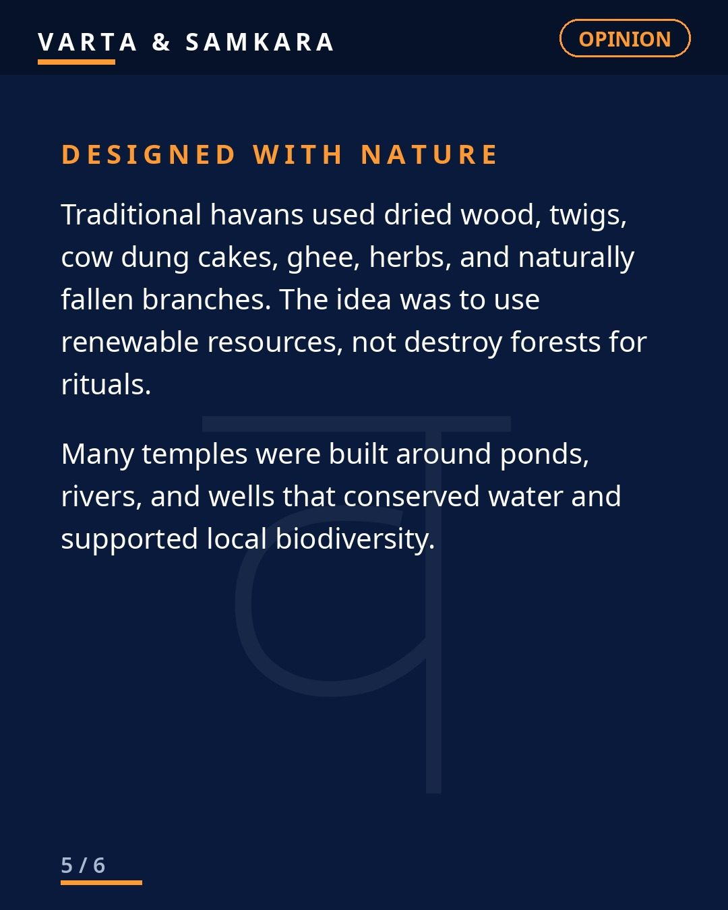
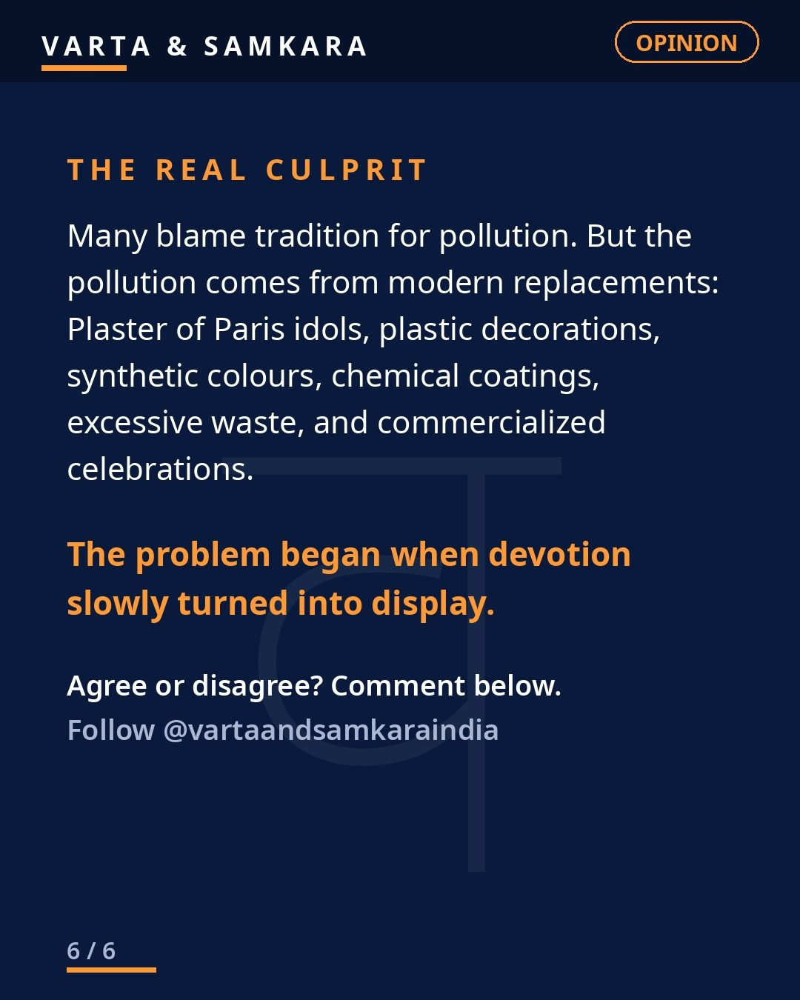

Opinion
OPINION | Ancient Hindu traditions were surprisingly eco-friendly.

Ancient Hindu traditions were surprisingly eco-friendly. Not as a slogan, not as a modern rebranding exercise. As a matter of design.
Long before "sustainability" became a conference theme, the daily and festival life of this civilization was built around a simple principle: take from nature, use responsibly, and return without harm.
Festivals that fed the ecosystem
Think about what a traditional festival actually involved. Clay idols that dissolved back into rivers, returning to the earth they came from. Offerings of milk, grain, and flowers that fed fish, birds, and insects instead of becoming waste. Haldi, kumkum, and sandalwood instead of chemical colours. Earthen lamps instead of plastic decor.
Nothing in that list is an accident. Every element was biodegradable because every element came from the immediate environment. The celebration and the ecology were the same system. Worship did not happen despite nature. It happened through nature.
The principle behind the practice
The core principle was simple: take from nature, use responsibly, and return without harm. You can see it everywhere once you look. Fasting traditions that rested the body and reduced consumption. Sacred groves where not a single tree could be cut. Rivers treated as mothers, not drains. Cows protected, trees worshipped, the earth itself addressed as a goddess.
This was not environmentalism as we define it today, with policies and carbon accounting. It was deeper than that. It was a worldview in which humans were participants in nature, not owners of it. Faith was meant to connect humans with nature, and the rituals were the connection made visible.
What changed
Much of today's festival pollution comes not from tradition, but from modern replacements. Plaster of Paris idols that do not dissolve and poison the water. Plastic decorations that outlive the celebration by centuries. Synthetic colours full of chemicals. Commercialized display that turned a sacred act into a spectacle.
Notice the pattern. Every polluting element is a modern substitution for something that was originally natural. The tradition is not the problem. The abandonment of the tradition is the problem.
The uncomfortable irony
There is an irony here worth sitting with. The same people who mock traditional practices as backward will lecture about sustainability in the next breath, while the tradition they mocked was practicing sustainability for thousands of years. The clay idol was zero-waste before zero-waste had a name.
This does not mean everything old was perfect. It means something specific: when it comes to living lightly on the earth, our ancestors understood something we are now paying consultants to rediscover. Take from nature, use responsibly, and return without harm. It was never complicated. We just forgot.
In pictures





Source: Editorial (user viewpoint)
Visuals: Original text graphics
See the original reel / carousel with motion graphics on Instagram.
View on Instagram